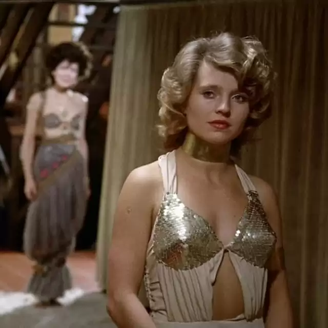

Film Screening: The Bitter Tears of Petra von Kant
In the early 1970s, Rainer Werner Fassbinder discovered the American melodramas of Douglas Sirk and was inspired by them to begin working in a new, more intensely emotional register. One of the first and best-loved films of this period in his career is The Bitter Tears of Petra von Kant, which balances a realistic depiction of tormented romance with staging that remains true to the director’s roots in experimental theater. This unforgettable, unforgiving dissection of the imbalanced relationship between a haughty fashion designer (Margit Carstensen) and a beautiful but icy ingenue (Hanna Schygulla)—based, in a sly gender reversal, on the writer-director’s own desperate obsession with a young actor—is a true Fassbinder affair, featuring exquisitely claustrophobic cinematography by Michael Ballhaus and full-throttle performances by an all-female cast.
Tickets: https://www.musicboxtheatre.com/order/add-tickets/15151